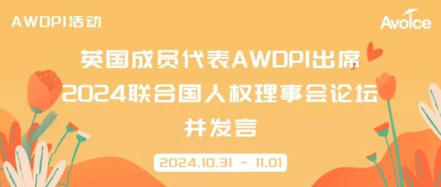
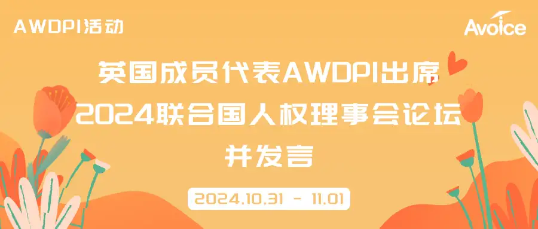
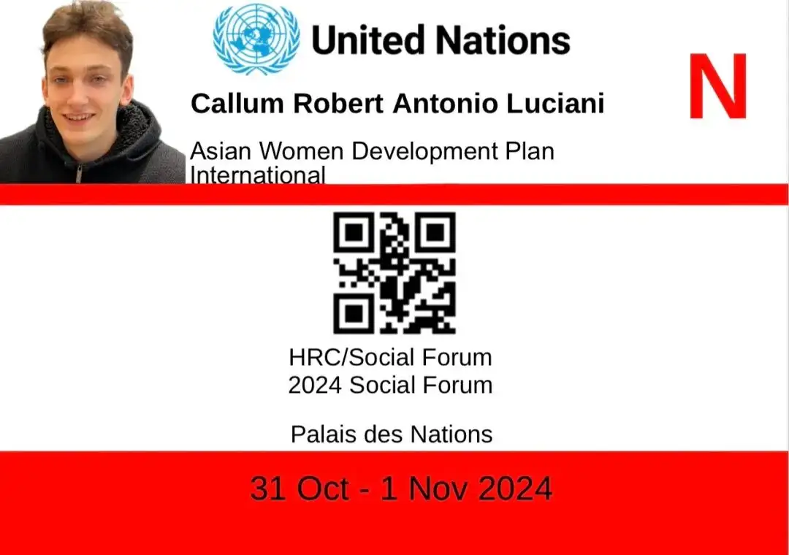
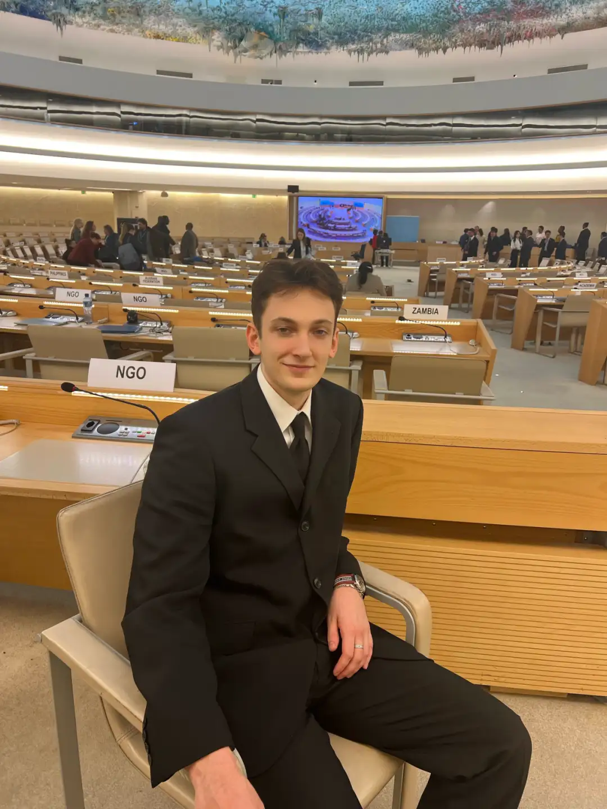

✦
•
✦
2024联合国人权理事会论坛

时间：2024年 10 月 31 日至 11 月 1 日
地点：日内瓦万国宫第二十号会议厅
2024年联合国社会论坛聚焦“发展筹资与人道主义发展” ，根据联合国人权理事会第53/20号决议，探讨了发展筹资在推动人道主义事业中的关键作用。当前，疫情后的经济恢复和全球持续危机使得发展中国家面临严重的资源和财政限制，这些挑战严重阻碍了可持续发展和人权的实现。
论坛的讨论集中于如何缩小发达国家与发展中国家之间的筹资差距 ，防止可持续发展鸿沟的长期化。发展筹资是全球福祉和可持续发展目标达成的关键，尤其是确保所有国家，特别是发展中国家，能够参与并从全球发展中受益。
《亚的斯亚贝巴行动议程》为发展筹资设定了明确目标，但执行效果未达预期。本届论坛为2025年在西班牙举办的第四次国际发展筹资会议奠定了基础，并推动了政府、国际组织、民间社会和私营部门之间的对话，尤其是在推动国际金融架构改革方面，寻求解决方案。
✦
•
✦
01
成员简介与论坛互动
Human Rights
Callum Robert Antonio Luciani，AWDPI英国成员，00后，拥有英国和意大利双重血统，目前在英国西英格兰大学攻读环境科学专业。他致力于推动可持续发展，特别关注环境保护，并关心发展中国家妇女和儿童的权利与福祉。

在为期两天的论坛中，Callum代表AWDPI组织，分别在“国内资源动员”和“国内外私营企业与财政”两个议题上发表了深入的演讲，此外他还在Q&A环节进行了关于数字工商化对低收入妇女影响的提问，展现了他在相关领域的深刻见解和关注。
02
议题一发言：“国内资源调动”
Human Rights
原 文 ——
Thank you !
Today I would like to discuss a crucial issue:the intersection of child rights and domestic funding. Children are the future of our societies, yet millions are denied their natural need to a dual parent household. It is imperative that countries mobilize resources effectively to address these pressing needs.
The education system in the west is not perfect but it is not where the core educational problems of children in these countries come from, these problems stem from broken families and with almosta quarter of children living in the USA without a father in the home , it's no wonder depression and suicide rates have spiked in recent times. Even more damning however is the fact that in America 64% of all black children grow up in single parent households, unfortunately this strongly correlates with negative outcomes in the child's life and therefore the current and future economy.
This issue can be tackled by offering a multifaceted initiative that includes financial incentives and support resources . My suggestion is that couples who marry and complete a premarital education programreceive a one-time financial grant , followed by additional bonuses for staying married for 5, 10, and 15 years. The program should also feature matched savings accounts for children’s education, providing financial support for families that save. Tax incentivescould include joint filing benefits and a family tax credit for eligible dual-parent households.Homeownership incentives, such as lower down payments for qualifying families, promote stable living environments. The expected outcomes include increased marriage rates, improved child well-being, enhanced economic stability, and stronger community ties.
翻 译 ——
今日，我将讨论一个至关重要的话题：儿童权利与国内资金的交集。儿童是我们社会的未来，但数百万儿童却无法享有在双亲家庭中成长的基本权利。因此，各国必须高效动员资源，以应对这一紧迫的需求。
西方的教育体系虽然存在不足，但这并非这些国家儿童教育问题的根本原因。在美国，近四分之一的儿童成长在没有父亲的家庭中，这一现象与近年来抑郁症和自杀率的急剧上升密切相关。更为严重的是，在美国，64%的黑人儿童生活在单亲家庭，这一现象与孩子生活中的负面结果密切相关，也对当前及未来的经济状况产生深远影响。
为了解决这一问题，我们可以采取一项多方位的举措，包括提供财政激励和支持资源。我的建议是，政府为结婚并完成婚前教育课程的夫妇提供一次性经济补助，并在婚后五年、十年和十五年时分别发放奖励金。此外，计划应包括为孩子的教育设立匹配的储蓄账户，鼓励家庭为孩子的未来储蓄，并为符合条件的家庭提供财政支持。税收激励措施可以包括为符合条件的双亲家庭提供联合申报的税收优惠以及家庭税收抵免。住房方面的激励措施 ，如降低首付要求，将有助于促进家庭的稳定生活环境。预期的结果包括结婚率的提高、儿童福祉的改善、经济稳定性的增强以及社区关系的巩固。
03
议题二发言：“国内外的私有企业与财政”
Human Rights
原 文 ——
Today I would like to discussthe potential of Microbial fuel cells, which use microorganisms to convert organic waste into electricity.
These fuel cells have dual benefits: they generate clean energy and manage waste which makes them especially appealing for industries seeking sustainable operations.Private businesses can leverage MFCsto reduce energy costs and carbon footprints. This directly improves their bottom line while enhancing environmental, social and ESG performance which is a key consideration for investors in the modern world.
The integration of microbial fuel cell technology into private business models can catalyse a shift towards circular economies , where waste is not merely discarded but reimagined as a resource. For instance, companies in the food and beverage sector can use MFCs to process organic waste from production, turning a liability into a revenue-generating asset. This creates new investment opportunities, particularly for venture capital and private equity firms looking to fund innovative solutions that align with sustainable practices.
On an international scale, the adoption of MFCs can foster partnerships between businesses in developed and developing regions . Wealthier nations can invest in MFC technology in emerging markets, helping to solve waste management challenges while creating a new revenue stream. This not only enhances the financial viability of local businesses but also drives sustainable development, aligning with global goals like the UN Sustainable Development Goals.
To conclude, the business case for microbial fuel cells is clear. They offer a pathway to reduce costs, meet regulatory demands, and attract investment. Embracing microbial fuel cells is not just a smart financial decision; it’s a commitment to a more sustainable and equitable future for all.
翻 译 ——
我想探讨微生物燃料电池（MFCs）的巨大潜力，这是一项通过微生物将有机废物转化为电能的创新技术。微生物燃料电池具有双重优势：不仅能够生成清洁能源，还能有效管理废物，这使得它们对于寻求可持续运营的企业具有特别的吸引力。私营企业可以利用这一技术降低能源成本、减少碳足迹，提升财务表现，同时增强环境、社会和治理（ESG）绩效，而这些因素在现代投资决策中变得尤为重要。
将微生物燃料电池技术融入商业模式，能够推动向循环经济的转型。在这种经济模式中，废物不仅仅是被丢弃的负担，而是可以转化为宝贵的资源。例如，食品和饮料行业的公司可以使用微生物燃料电池处理生产过程中产生的有机废物，将本应成为负担的废物转化为一种盈利的资产。这种转变为投资者创造了新的机会，尤其是对于那些寻求支持创新解决方案并符合可持续发展实践的风险投资和私募股权公司而言。
在国际层面上，微生物燃料电池的推广可以促进发达地区与发展中国家之间的合作。富裕国家可以向新兴市场投资微生物燃料电池技术，不仅能够帮助解决废物管理问题，还能为这些市场创造新的收入来源。通过这种方式，不仅提升了当地企业的财务可行性，也推动了可持续发展，符合联合国可持续发展目标等全球倡议。
总结来说， 微生物燃料电池的商业价值显而易见。它提供了一条降低成本、满足监管要求并吸引投资的有效途径。采用微生物燃料电池不仅是一个明智的财务决策，更是承诺为全人类构建一个更加可持续与公平的未来。
04
Q&A 环节
Human Rights
Q:
AWDPI提问——
如何解决数字工商化对低收入妇女的带来影响的问题？
:A
代表回答——
在我刚才的演讲中，妇女保护这一角度有所忽略，实际上，数字工商业可以从以下几个方面来有效保护妇女的权利。
首先，数字工商业的实体应积极开发适合女性的新职业，这是数字企业相比传统企业的一大优势。女性在数字经济中不再受性别、怀孕或体力等限制。例如，网络零售、互联网医疗、网络直播等新兴行业为女性提供了新的就业平台和机会，打破了传统行业中性别不平等的壁垒。
其次，政府应加强对妇女，特别是边远地区和欠发达地区农村妇女的数字技能培训 。可以增设专门针对妇女的数字经济创业培训项目，帮助她们提升数字技能。数字企业也可以发挥其优势，为妇女提供培训资源和支持，帮助她们更好地融入数字经济，提升就业竞争力。
最后，数字企业应致力于开发不带性别偏见的人工智能应用程序。这意味着在开发人工智能时，必须确保使用的数据具有性别敏感性，避免在算法设计中无意间引入性别歧视。这不仅能够促进性别平等，也能帮助妇女在数字时代获得更多的机会。
本次论坛，AWDPI与其他人道主义相关的非政府组织进行了富有成效的交流与学习 。通过此次互动，我们对发展筹资策略进行了多维度的审视，并提出了如何通过国际合作解决发展鸿沟的具体建议。
然而，这不仅仅是一次理论上的探讨，更是一份行动的号召。它激励我们每一个人，无论是政府、私营部门还是民间社会，都应采取切实可行的措施，确保我们的发展路径是包容的、可持续的，能够惠及全球每一个角落、每一个需要帮助的人。我们的努力不仅是为了今天的繁荣，更是为了为未来的世代铺设更加公平和可持续的发展道路。
撰稿丨孙小禾
润色丨陈子涵 何香莲
审校丨秦科
排版/封面｜罗菲